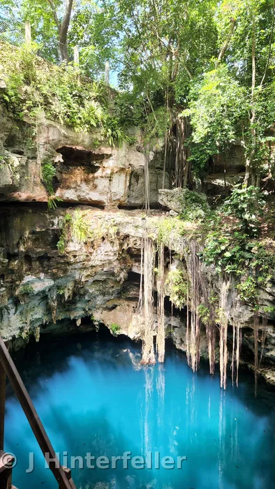
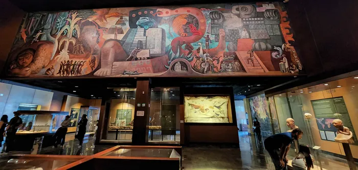
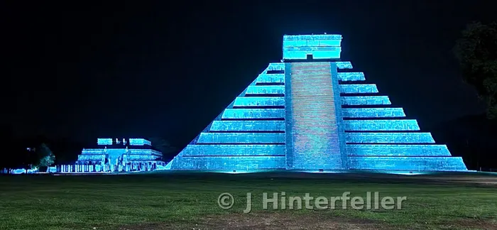
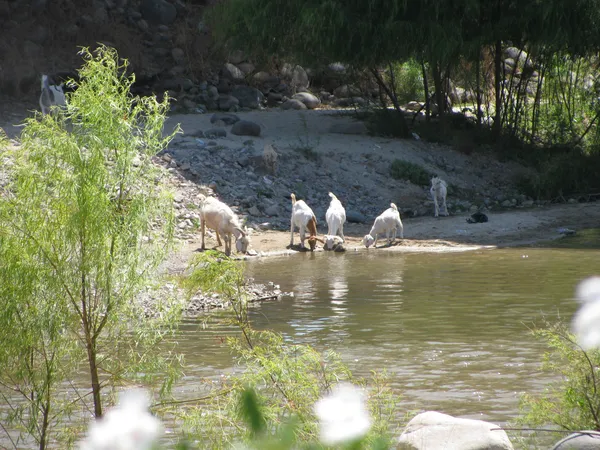
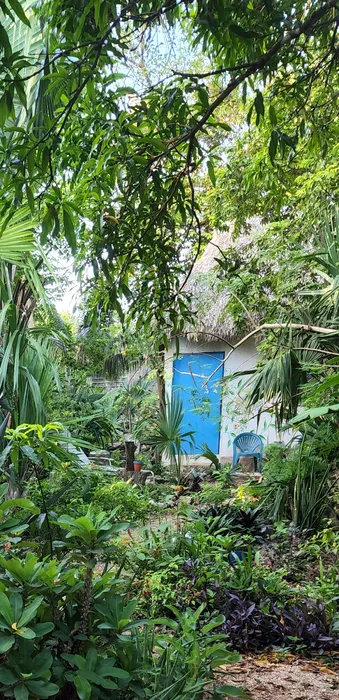

Yaxunah
Village Well Portal
ENTER SHORT INTRO PARAGRAPH HERE
{kind=link}

Yaxunah
Continued →

Allow your mind to drift back in time...
Soon this will be a portal to insightful displays that are in progess. In the meantime here is a link to the museum
Explore the National Museum of Anthropology
ENTER YOUR OPENING HOOK / INTRO PARAGRAPH HERE
PASTE YOUR ARTICLE TEXT HERE

While on a day trip from Guadalajara to Lake Chapala, the largest lake in Mexico, we made a pit stop in a small one-horse town. There were only a few buildings on each side of the road and we just pulled into the first one on the right. Inside there was the largest collection of opals I had ever seen. Giant unfinished stones dark like red wine, and small white ones with a beautiful mosaic of blue, pink, green, red, and purple sparkles. There were rough stones unfinished, polished gemstones, finished jewelry, artwork like turtles and birds inlaid with the magical stones. For a moment, I felt like I was in a secret chamber of a king's treasure trove. There were giant purple geodes from Brazil around the corners of the store. I believe they were the only things the owners did not produce themselves. In the back two rooms you could see different sized saws, tumblers, polishers, and all the hand tools situated around a couple of desks with lamps at different angles. The owners were a very friendly couple in their early to mid-50s. The lady stood behind the counter and answered any questions, and the man was out walking around the store. He noticed our interest and offered to take us to mine our own gems. I think we paid around 60 pesos, which at the time was equivalent to $5 — not bad for a group of four adults and two children.
The tall man walked us out and got into his little pickup truck. It was an old Volkswagen Rabbit pickup, maybe early 1980s. This truck had paid its way time and time again and it was still going. Who knows how many miles it had, but I know that it was 2009 and it had not been restored. We followed him in the new Honda Accord (which seemed bigger than the pickup) up an old gravel road. We kept a little distance, as it was not rainy season and clouds of dust rolled off his tires. A few miles later he pulled off to the side of the road. A modest, well-kept home was down the hill to the right, and on the left was a lean-to shelter for animals. His home was not what you might expect for a man with such a large collection of jewels, but it was nice. The yard was a conglomeration of gardens, flower and vegetable. A couple of sheds with weathered gray wood and rusted corrugated metal roofs stood nearby, along with a chicken coop, a couple of burros, a little family of pigs, and bird feeders in the trees. The trees and the little hill that the road sat on created a nice shaded protection to keep the blazing summer sun at bay. He asked us to wait, and he went down to a shed and grabbed the tools we would use for mining: rock hammers, the kind that look like a miniature pickaxe on one end, used for chipping, and a square flat hammer head on the other, used for crushing. That was all. We got back in the car, and this time we didn't drive as far, maybe half a mile. There it was, the opal mine. It was a big hole carved out of the ground. The upper half had once been a mound; the back side, still intact and facing us, was a sheared-off rock wall with about six inches of gravel and burnt yellow grass left over, suggesting a beautiful green pasture had surrounded us only months before. There was a bit of a language barrier, and this man was having a little fun with it for his own enjoyment. He handed us the hammers and pointed at the large rock wall. The two of us men eagerly grabbed the hammers and started down what looked like a path where a large dump truck could back down to the edge of the wall. We started beating away at the earth, feeling every vibration ring down from hand to wrist to elbow. Clang, clang, clang, we beat away, squinting our eyes in case a small rock chip found a way around our sunglasses. We had no idea what we were supposed to be looking for, and I sure didn't see anything shiny. The man stood at the top of the hill with the women and children, encouraging us to continue with a sly grin on his face. Then he grabbed a couple of square stones about the size of bowling balls and handed one to each of the ladies. He showed them how to strike the top of the cube so a slice came off like a piece of bread. I watched while I kept beating at the wall, wondering what the hell I had gotten myself into. A good bit of sweat was pouring down my face, and I was in the shade. But that was part of the secret, I couldn't see the shiny glimmers in the shade, but the women were up there saying "ooh" and "aah" at each slice they chiseled off, revealing a new array of glimmering rainbows. Nothing you could isolate and make into a gem, but the whole stone was covered in thin shards of opal, thin like the cover glass of a microscope slide, only about half that thickness. We caught on and ran up to seek our fortune. About 20 minutes passed, and the old man took a liking to our ambition and determination, so he decided to continue the tour. We got into the cars and drove further on, another mile, then got out and walked. As we walked, we passed a shrine with the Virgin Mary sitting on top; he told us this was his family's grave. Fifty meters past that we came upon a huge hole in the ground, and I figured this one would turn out just like the first. He stopped there, and we found stones about half the size of the first ones. We chipped once or twice and he said "Bueno" and waved us on. The next pile of rocks was smaller, then further on smaller still, and finally, with his clever smile, he said "dinamita," and we all had a laugh. There we were, beating at a mound of rock with tiny rock hammers, and he was using dynamite. At this point we were all quite fond of each other, and we made it to his final phase, the small pile of stones about the size of a nickel or smaller. We had to be careful of little golden scorpions, as they blended in well with the pile. I found about six little opals, and no one left empty-handed. But really, I walked away feeling wealthy with an experience of camaraderie and hospitality that maybe few have been able to glimpse, a window into this family's livelihood, and how these brilliant, vibrant stones come from the earth and are made into jewelry.
ENTER SHORT INTRO PARAGRAPH HERE

ENTER SHORT INTRO PARAGRAPH HERE
{kind=link}
{kind=link}
{kind=link}
{kind=link}
{kind=link}